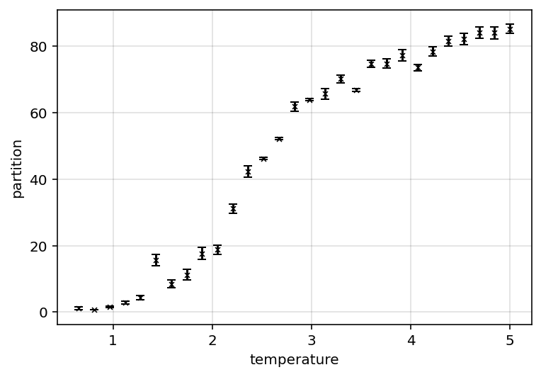
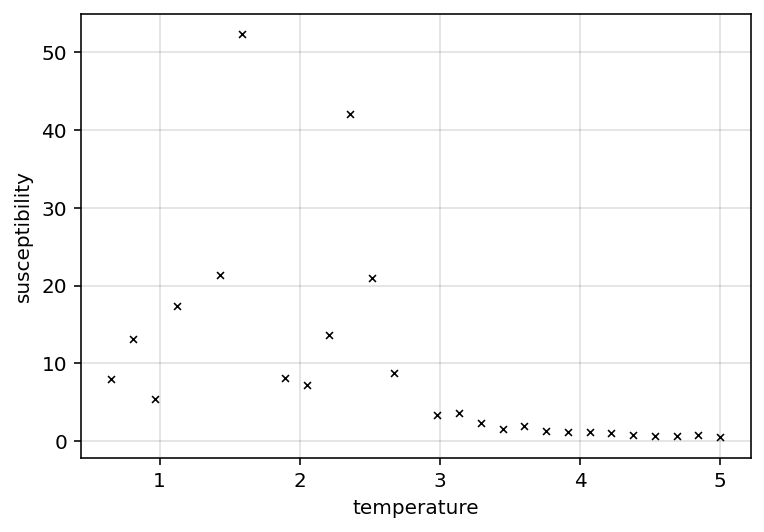
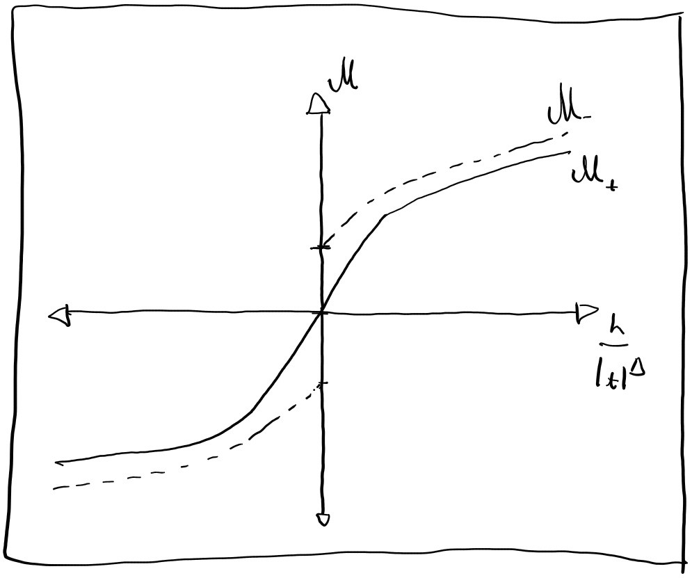

#Wk3 lab log
05/02/2026:
Quick group meeting w/Turci; outlined report requirements, structure and expectations
Discussed w/Scarlett direction; she’s more interested in cluster behaviour, i’m more interested in critical exponents. Most of the core code functionality is setup; so there may be a point at which we start to diverge in our research interests. TBD, more code experimentation and setup to do, but to be considered.
quickly attempted to generate data over temperature; however 1/np.array doesn’t create a list of reciprocals; so that was a mistake
am generally fiddling with data ranges and plotting graphs to get an idea of what data ranges would be ideal for this project. generally speaking range \(\beta \in [0, 3]\) seems appropriate.
general reading
Reading more through cite{complexityAndCriticality} whilst waiting for data to generate.
Note to self, can incorporate boltzman distribution Eq. 0.4:
\(p = \frac{e^{-H\beta}}{Z}\) Eq. 0.4
Into observable average as:
\(<A> = \frac{1}{Z}\sum{e^{-H\beta} \cdot A_{i}}\) Eq. 3.1
my be useful to better compute observables in main config Also, may be useful to normalise observables to number of spins ()
general log continued
Have implemented above; the absolute magnetisation over beta plots change from:

to

This change seems to better incorporate the probability of configs, thus “converging” the average magnetisation to the “true” magnetisation significantly faster and better. This has made the phase transition a lot clearer; in (\(d=2\), \(L=20\)) appears to be ~ \(\beta_{c}=0.4\) - note however that equilibration times are a lot longer near criticality, so is noisier
To do list:
- implemenet variable equilibration steps into dataset (so can pass in either float, or array of equilibration values) (done)
- normalise observables
- Figure out way to compute critical \(\beta_{c}\) from data
- do a basic fit to \(|T - T_{c}|^{x}\) where \(x\) is the critical exponent
- examine basic \(x\) over a range of sizes to establish finite size effects
- try and figure out way to account for finite size effects
- repeat analysis in higher dimensions
lab log continuation
have tested a narrower temperature range (\(T \in [0.5, 5]\)), yields:

Note how high temperatures seemingly have a lot more uncertainty.
Also generated plots for the other observables:



Note how Fig 3.4 seems to have some asymmetry in it’s transition. It appears to have a near discontinuous increase about \(T\approx2\), but has a smoother continuous change as T increases. A few potential explanations worth considering:
- From cite{complexityAndCriticality}, it seems that the \(|T - T_{c}|^{x}\) expressions are usually one sided; this may be a manifestation of that?
- May be finite size effect
hemlholtz plot finally produced (code errors required re-simulating data for useful results):

It seems that the critical temperature coincides w/minima of helmholtz free energy (ignoring outlying data points). Unsure if this is coincidental or not, however if so, may provide an incredibly easy method of finding the critical temperature.
dataset data analysis:
Starting to think about how to analyse the data being generated. Particularly, need to do following:
- find the critical temperature
- fit exponent curves of form \(|T - T_{c}|^{x}\) to observables as appropriate (they may be one sided)
To do so however it is necessary to filter for evident outliers in the data. This may be done manually, however it’d be more convenient to do so automatically. A potential means to do this would be to filter by a generic “continuity check”. Given a particular observable \(a_{i}\) with neighbours \(a_{i-1}\), \(a_{i+1}\); it would interpolate between the neighbours; if \(a_{i}\) is within uncertainty of the interpolated value, it is accepted, else it is rejected. This approach may cause erroneous results however when evaluating the edges of the dataset. Since this method relies on neighbours, it can’t validate data at either end of the dataset. It may be possible to extrapolate to the data edges from the next 2 nearest points?
That may be a better way of doing it; extrapolate from the 2 nearest points for the continuity check. For most datapoints that will be both neighbours, however for the endpoints it will extrapolate from the data.
This method may be a bit crude, but should discard most outliers. THe main risk is that it may “flatten” and trends in the data due to datapoints being too far apart from each other. However adequate sampling density should avoid this issue.
Quickly implementing this method on the helmholtz energies yields: 
Which seems to not work. minor fixes; code is UGLY, but it seems to work. Filtering seems to work.
Talked to Dr Turci, asked about the apparent minima in helmholtz free energy; pointed out its a non standard way of finding critical temps; suscpetibility/spin and specific capacity/spin are more common:
\(\chi = \beta\frac{<M>^2 - <M^{2}>}{N}\) Eq. 3.2
\(C = \beta^{2} \cdot k_{b} \cdot \frac{<E>^2 - <E^{2}>}{N}\) Eq. 3.3
attempted implementation; doesn’t seem to be working yet. needing to resimulate the data. Am also unsure how to propagate errors through the susceptibility and heat capacity either. propagating errors in terms yields:
\(\Delta \chi^{2} = (\frac{\beta}{N})^{2}((2<M>)^{2}\Delta<M>^2 + \Delta<M^{2}>^2)\) Eq. 3.4
\(\Delta C^{2} = (\frac{\beta^{2}}{N})^{2}((2<E>)^{2}\Delta<E>^2 + \Delta<E^{2}>^2)\) Eq. 3.5
susceptibility seems to be working-ish (errors are massive but given expression i’m not sure error propagation makes sense as a concept) - also peak of susceptibility seems to be offset relative to apparent critical temperature in all other graphs (\(T_Cs \approx 3\)).
Error found. Eqs 3.2-3.5 use the mean, code was using weighted average instead. Quick graphs produced:


Don’t think these work fully. actually unsure if i should used weighted average; textbook seems to indicate weighted average? All of these tests have been conducted on a single dataset (saved for convenience) - it may be worth testing on a larger, more fine grain dataset.
To Do list:
- fix susceptibility and heat capacity computations
- run big dataset; see if that fixes
- figure out exponent fitting
- add a “recompute observables” method to config object; that way old config objects can be updated if computations change
- double check all observable computations
06/02/2026:
Not doing proper lab work today, but am generating some larger datasets in the background (40 configs over \(T\in [0.5, 5]\) for 100x100, 1000 Equil steps, 500 sim steps) to have better testing/development data. Furthermore, Dr Turci did some more thinking on the apparent minimal helmholtz free energy cooresponding to critical temperature. Apparently the critical temperture should show up in the second derivative \(\frac{d^{2}F}{dT^{2}}\), but shouldn’t be visible as is (given \(dF = pdV -SdT\), and entropy SHOULD be positive (may need to double check thats computed correctly), F should decrease over data range); Dr Turci suggests it may be poor sampling about \(T_{c}\); i suspect i’ve computed an observable incorrectly.
07/02/2026:
log:
observables implemented:
- Energy (code verified)
- Magnetisation (code verified)
- Partition function (code verified)
- Entropy (code verified)
- Helmholtz free energy (code verified)
- Boltzman weights (Given average observables are weighted by boltzman distribution, computing these weights seperatedly made sense) (code verified)
- Susceptibility (code verified)
- Heat capacity (code verified)
quickly rewrote calcEnergy - needed to be generalised; plus was opportunity to double check correct implementation Similarly rewrote partition function method as it used a very similar implementation to calcEnergy
Have double checked all the computation; nothing is immediately wrong reran data; seems susceptibility fixed itself, however heat capacity hasn’t
I suspect it may be due to noise in the data? would need to run a larger dataset to verify.
Implementing “continuous saving” to “fromBetas” dataset construction - ensures that data saves over dataset generation ensuring interrupted runs don’t wipe out whole chunk of data (also implemented “already exists” checks as part of this, allows for quick restarts) - code is messy but works and shouldn’t need to be touched significantly
cleaned up code a bit
have started working in critical exponent fitting.
comparing values to https://www.phys.ens.psl.eu/~jacobsen/AIMES/Ising.pdf which quotes \(\beta=\frac{1}{8}\); testing finds \(\beta=0.03\) for 20x20 config; off by a factor of 4. Not the worst result however, but the fit leaves much to be desired:

Will need to do some debugging to see where this may be coming from…
have created new .py file; simply a place to streamline “bulk data generation” - imports everything else, that way desired datasets can be neatly laid out as a queue Furthermore, have updated how datasets save configs to files; they will also check if duplicate configs already exist and skip them if they do. This makes restarting interrupted datasets easier, and means that its easier to add data to an existing dataset (I.E, it may be useful to add a high density region around critical points with higher equilibration steps).
Am setting my laptop to generate some main data runs overnight; these are all 2D models in 3 batches which represent 1000, 2000, 3000 equilibration steps. The first 2 batckes (1000, 2000 steps) have a range of sizes [20, 30, 40] whilst the final batch has a range [20, 30, 40, 50, 60, 70, 80, 90]. This was done to compare the effects of equilibration times, as well as to begin investigating finite size effects empirically. The longest equilibration dataset has more sizes because it is expected to be the highest quality data, and establishing the effect of equilibration can be done with a more limited subset of data.
09/02/2026
Laptop is still generating data. First night, it shut itself down interrupting progress. Second night it was kept on, and mostly handled the 100x100 over 3000eq steps, 500sim steps. Starting at ~ 14:00 08/02/2026, till now (10:00 09/02/2026) it has generated 18/40 datapoints. Given that each simulation calls “mcMove” for each step taken, and that “mcMove” loops through and performs a computation for each of its cells; the above timings gives a rough computation speed of \(8750 cell computations/s\) (alternatively \(31.5 \cdot 10^{6} cell computations/Hr\) or \(0.756 \cdot 10^{9} cell computations/day\)). THis is useful as it allows for time estimates for future datasets to be planned in advance, allowing for better planning. The theoretical timings for potential datasets of 3000eq, 500sim steps, 40 datapoints follow:
3D \(20^{3}\): ~1.48 days
3D \(22^{3}\): ~1.97 days
4D \(10^{4}\): ~ 1.85 days
5D \(6^{5}\): ~1.44 days
6D \(4^{6}\): ~0.76 days
4D \(20^{4}\): ~ 29.6 days
The large 4D example is impractical to generate given the time constraints of this project. However all the other options aren’t impractical. Combined they’d take ~1Wk non stop computation to complete. Whilst there are likely to be some interruptions, i think this may be feasible. The main question is to what degree can finite size effects be accounted for in such small model sizes; if its possible to account and “correct” for such finite size effects, comparing critical exponents over \(d\in[2,6]\) may be interesting. However given the significant computational investement, its worth knowing the following:
- How to correct/account for finite size effects - this is crucial, otherwise the different sized different dimensioned datasets can’t be compared to each other
- What should the dataset parameters be for arbitrary dimension/size:
- How does model size and dimension relate to required equilibration steps
- How does critical temperature relate to dimensionality
- this is important because of the heavy computational investment; exploring a particular dimension to determine these parameters experimentally would be a waste of time; so trying to estimate the appropriate equilibration steps and temperature ranges.
As such, its worth doing some additional reading/research particularly to address correcting for finite size effects.
minor reading
cite{complexityAndCriticality} has a section on scaling laws (p188 onwards); the key insight worth taking away is normalising the temperature. The critical exponents for a given observable typically look like:
\(O \propto |T-T_{c}|^{\beta}\)
the insight is to normalise \(T\) as:
\(t=\frac{T-T{c}}{T_{c}}\) Eq. 3.6
s.t that the exponent expression become:
\(O \propto |t|^{\beta}\) Eq. 3.7
\(O = h(x) |t|^{\beta}\) Eq. 3.8
where \(h(x)\) represents some scaling function. The book goes into further detail as to what these scaling functions should look like, however given the data being generated, it should be possible to fit for \(h(x)\) and \(\beta\) empirically. It may be interesting to compare the empirically fit \(h(x)\) to analytical solutions of time allows, but it seems that its possible to entirely bypass that analytical component (which makes this project more straightofrward for the moment).
Note the book goes into some detail about the scaling function. Examining the scaling function for magnetisation specifically, it generally has the shape:

And relationships:
\(lim_{x\to 0}M_{+}(x)=0\) Eq. 3.9
\(lim_{x\to 0}M_{-}(x)=c \ne 0\) Eq. 3.10
So when fitting the data, it will be necessary to consider which side of the critical point is being evaluated
further reading cite{scalingCardy}
The textbook cite{scalingCardy} has a chapter going over group renormalisation methods. I don’t fully understand the concept, but will attempt to summarise the useful parts of it here.
renormalisation transform
The key idea is the idea of a “block” or “renormalisation transform”. This entails “coarsening” the ising model, grouping spins together into larger “aggregate” spins as illustrated:

This transform is noted as:
\(s' = R/{s/}\) Eq. 3.11
This has the effect of rescaling the model to different sizes. Crucially for later, behaviour at the critical point is unchanged by renormalisation. Likewise, the partition function is generally unchanged by renormalisation:
\(Z' = R{Z}\)
\(\downarrow\)
\(Z'=Z\) Eq. 3.12
renormalisation of coupling strength \(J\) and example of correlation lenght
A particular example noted by the book, is the renormalisation of the coupling strength \(J\) (the book uses \(K\)) in the ising hamiltonian, which follows:
\(R{J} = J' \approx b^{d-1}J\) Eq. 3.13
where \(b\) is an arbitrary parameter, \(d\) is the dimension. Furthermore (apparently), for \(J\) close to the critical point %J_{c}%, the following relation follows:
\(J' \approx J_{c}+b^{y}(J-J_{c})\) Eq. 3.14
\(y=\frac{ln(J_{c})}{ln(b)}\) Eq. 3.15
For some \(J\) dependent observable (the book uses correlation length \(\xi(J)\)), the renormalisation transform results in:
\(\xi(J)=b\xi(J)\) Eq. 3.16
And given some \(n(J)\) repeated applications of the transform, this becomes:
\(\xi(J)=\xi_{0}b^{n(J)}\) Eq. 3.17
Given the critical behaviour of \(\xi\propto (J-J_{c})^{-v}\), it is possible to substitute in Eq 3.17 as:
\(\xi \propto (b^{y}(J-J_{c}))^{-v}\) Eq. 3.18
which generates a relationship between the critical exponent \(v\) and the parameter \(y\) derived from the renormalisation transform (I’m unsure how to do this however).
general theory - group eq
More generally, the renormalisation transform on some observable \(K\) can be expressed as a linear transform of form:
\(K'_{a}-K_{c a} = \sum_{b}T_{ab}(K_{b}-K_{c b})\) Eq. 3.19
\(T_{ab} = frac{dK'_{a}}{dK_{b}}|_{k=k_{c}}\) Eq. 3.20
Skipping over a bunch of maths “scaling variables” can be defined and expressed as:
\(u_{i} = \sum \phi_{a}^{i}(K_{b}-K_{c b})\) Eq. 3.21
\(u_{i} = b^{y_{1}}u_{i}\) Eq. 3.22
where \(y_{i}\) represent the renormalisation group eigenvalues (although the implications of this are lost on me).
Note that these eigenvalues are classified as “relevant” if \(y_{i}>0\).
free energy scaling
Given this theory, it is possible to rescale the Helmholtz free energy as:
\(f(\{K\}) = g(\{k\})+b^{-d}f(\{K'\})\) Eq. 3.23
\(b\) is some constant and \(d\) is the dimensionality. where \(g({K})\) represents an inhomogeneous term which can be neglected when looking for critical exponents, so Eq. 3.23 becomes:
\(f(\{K\}) = b^{-d}f(\{K'\})\) Eq. 3.23
Expressing this in terms of thermal and magnetic scaling parameters \(u_{t}\), \(u_{h}\) eventually yields:
\(f_{s}(t,h) = |\frac{t}{t_{0}}|^{\frac{d}{y_{t}}}\Phi(\frac{\frac{h}{h_{0}}}{(\frac{t}{t_{0}})^{\frac{y_{h}}{y_{t}}}})\) Eq. 3.24
where \(t_{0}, h_{0}\) are scaling constants (unsure how to find these generally, may be relative to reference model size?)
Further note i’m pretty sure this is in terms of normalised temperature \(t=\frac{T-T_{c}}{T_{c}}\), but not fully sure.
relationship to critical exponents
Given the free energy Eq 3.24, critical exponents for all other quantities follow:
Heat capacity
\(C=\frac{d^2f}{dt^{2}}\propto |t|^{-\alpha}\)
\(\alpha = 2-\frac{d}{y_{t}}\)
Spontaneous magnetisation
\(m=\frac{df}{dh}\propto (t)^{\beta}\)
\(\beta=\frac{d-y_{h}}{y_{t}}\)
Susceptibility
\(\chi=\frac{d^2f}{dh^{2}}\propto |t|^{-\gamma}\)
\(\gamma = \frac{2y_{h}-d}{y_{t}}\)
magnetisation
\(m=\propto (h)^{\frac{1}{\delta}}\)
\(\delta=\frac{y_{h}}{d-y_{h}}\)
All of these relate to each other with the relations:
\(\alpha + 2\beta +\gamma = 2\) Eq. 3.25
\(\alpha + \beta(1+\delta)=2\) Eq. 3.26
plans from this point forwards:
As it stands, I think i have a better idea of the renormalisation theory, however an still somewhat unsure how to use it. Particularly i’m unsure how to find the \(y_{t}\), \(y_{h}\) scaling factors (i’m assuming that its scaling factors relative to a “baseline” size? so y_{0} would be value for baseline size, muliplied by y_{t} for any other size?).
As such I have 2 options to deal with critical exponents:
- Fit to \(t=\frac{T-T_{c}}{T_{c}}\) instead of T - this may already solve my issues in fig. 3.10
- Ask Dr Turci how to relate current understanding of renormalisation theory to the data i have
There are 2 possible outcomes of that:
- I can effectively renormalise the results of any sized configuration to an equivilant “standard size”
- I can’t do that
If its possible to renormalise the results, it becomes possible to measure critical exponents and compare them between differently sized models. If this is the case, it may be possible to examine the exponents of significantly higher dimensions whilst simulating relatively small sizes. If so, it’ll be necessary to setup a queue of desired higher dimensioned datasets as soon as possible, and run it near continuously. If not i may need to restrict my investigations to \(d=2,3\) for size \(L=20\).
At any rate, the next coding objective is to figure out the exponent expression fitting and create a robust method for measuring the critical exponents for all observables (heat capacity, magnetisation, susceptibility)
I’ll also need to find further references for: * values for critical exponents (wikipedia has an uncited table which is annoying) *